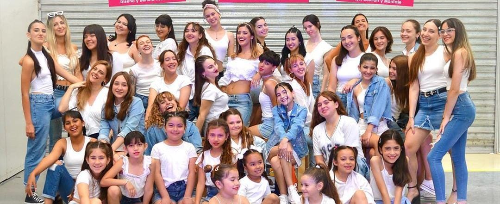

ACADEMIA JAZZ JOVEN
La escuela de danzas JAZZ JOVEN fue creada por Antonella Caprioli, en la busca de crear una nueva modalidad de la danza. Podes encontrar distintas rutinas como lo son Ritmos Urbanos, Jazz Contemporáneo, PBT, Arabe, entre otros.
NUESTRAS PROFESORAS

Antonella Caprioli
Es la directora de Jazz Joven. Asistió a Comedia Musical (Escuela de Reina Reech) y Acrobacia (Escuela Flavio Mendoza). Integró compañías como Argentine Tango Company y Tango Rojo. Tambien en paralelo inició con los estilos urbanos y contemporáneos con profesores como Matias Napp. En 2018 y 2023 dio un paso enorme en su carrera asistiendo a clases de escuelas internacionales. A su vez entre 2018 y 2022 cursó la Tecnicatura en Intérprete de de Danzas en la Fundación Julio Bocca.
Selene Gorordo
en 2011 Tomó clases de gimnasia artística en Deboulé, durante el 2013 comenzó clases de jazz en la Academia de Hugo Patin. Empezó a tomar clases con Antonella Caprioli y en la escuela de Reina Reech en 2017. Durante el 2021 tomó clases en Tango Musas con Natalia Patin y en la Estacion de la Danza, en el 2022 Comenzó a dar clases en grupos infantiles en Jazz Joven y en 2023 le otorgaron una pasantía de ayudante en talleres de baile del colegio Armonia
Natalia Spadoni
Es nuestra profesora de danzas árabes, tuvo una extensa formación en el ritmo. Se unió durante el año 2023 a Jazz Joven, tras años de experiencia dando clases del ritmo en la ciudad de Campana.
Maribel Vallejos
Tiene certificación en nivel 1, 2 y 3 de PBT (Progressing Ballet Technique) por la profesora Contansa Belgareto, se formó hasta el 5to año de danza clásica, tomó clases de jazz con Hernan Casanova y participó de dos temporadas del show Varieté. Formó parte del Ballet Martin Fierro participando en distintos festivales de folklore desde el 2010 al 2012. Se formó en tango con diversos profesores reconocidos en el rubro. Tuvo una extensa formación en jazz. Participó en seminarios de Bombo y Flamenco.